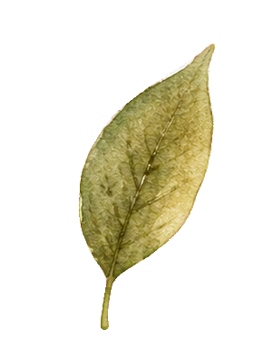
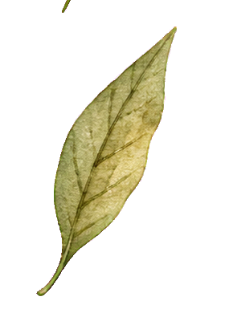
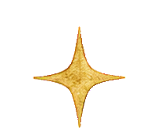
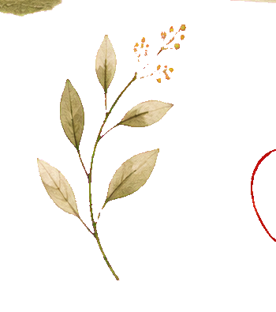
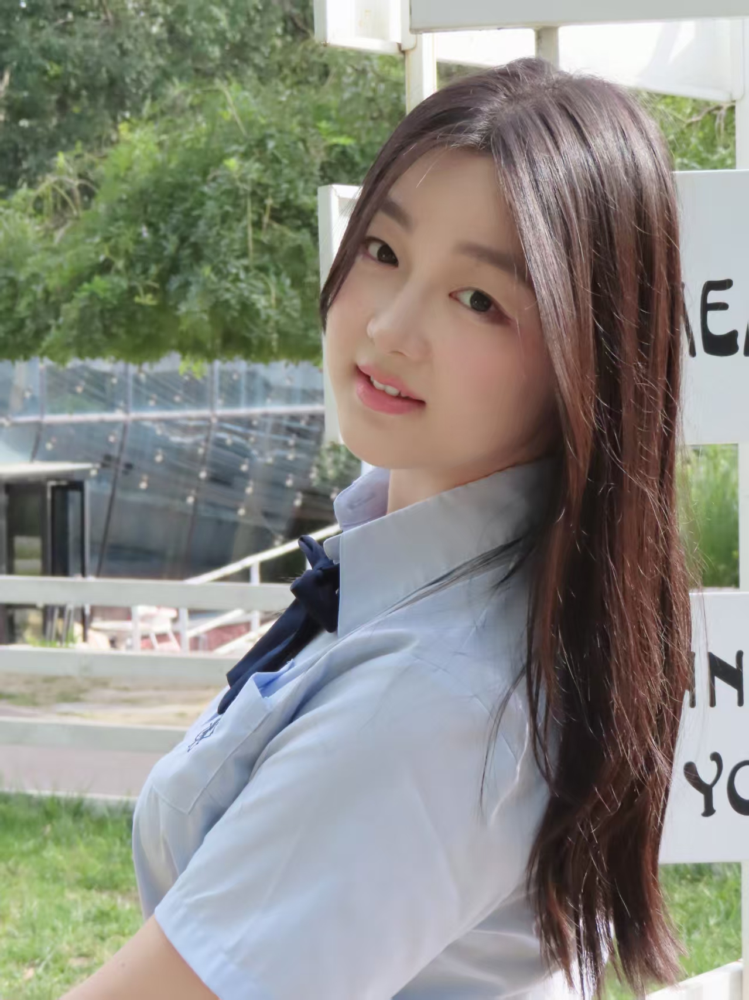
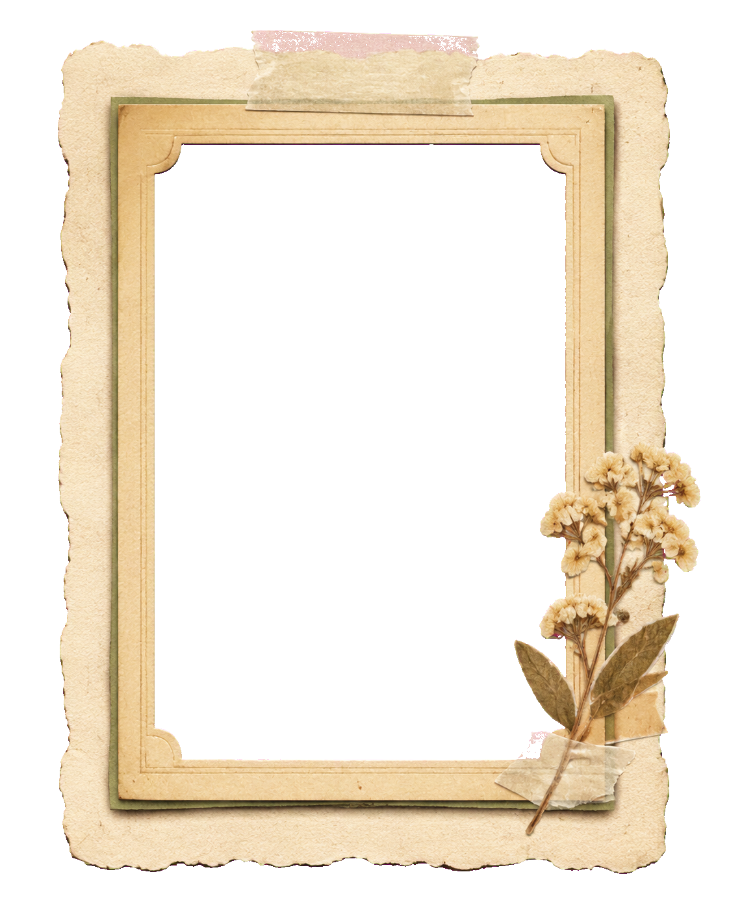
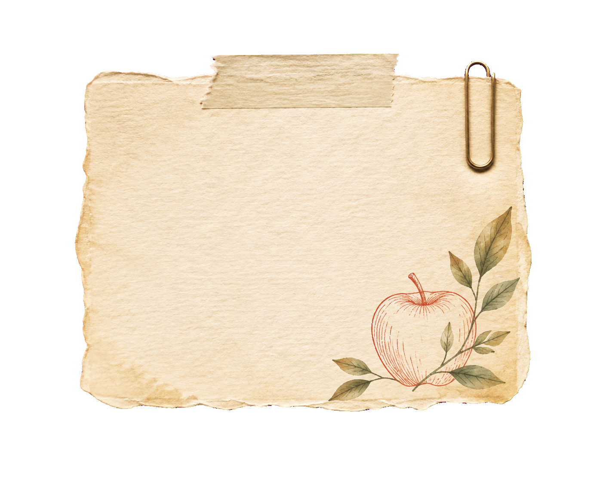

PROFILE
基础信息
- 年龄
- 24岁
- 政治面貌
- 党员
- 方向
- AI 产品设计 / AI 应用开发



实习经历 01实习经历 02 关于我
A LITTLE ABOUT ME
我从真实业务问题出发，关注 AI 产品如何被设计、验证并真正交付。


PROFILE
EDUCATION
EXPERIENCE
CAMPUS
学生组织
校学生会策划部部长
软件技术和网络安全党支部组织委员兼纪检委员
社团经历
达雅尔视频剪辑社团部长
计算机与信息工程学院辩论队队员
SKILLS
PROJECTS / 2021 — 2026
悬浮项目查看摘要，点击案例查看完整内容。
FEATURED CASE · 01
一个把选词、AI 解释、语境练习与间隔复习串起来的学习闭环。
A FEW MOMENTS I KEPT
拖动胶卷探索，点击图片放大预览。

LET’S MAKE SOMETHING